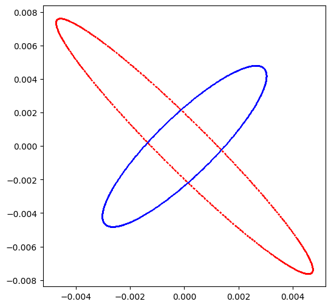

Example-56: Trajectory (Differentiable trajectory generation)
[1]:
# In this example usage of differentiable trajectory generators is illustrated
# This generators can be defined to genetate parametic trajectories at one or several observation locations
# Given initial condition, number of iterations and deviation variables, generators return corresponding orbit data
# Generators are differentiable with respect to initial conditions and parametes
[2]:
# Import
import torch
from pathlib import Path
from matplotlib import pyplot as plt
from model.library.line import Line
from model.library.corrector import Corrector
from model.command.external import load_lattice
from model.command.build import build
from model.command.wrapper import group
from model.command.orbit import orbit
from model.command.tune import tune
from model.command.mapping import mapping
from model.command.trajectory import trajectory
torch.set_printoptions(linewidth=128)
[3]:
# Build and setup lattice
# Load ELEGANT table
path = Path('ic.lte')
data = load_lattice(path)
# Build ELEGANT table
ring:Line = build('RING', 'ELEGANT', data)
ring.flatten()
# Merge drifts
ring.merge()
# Turn off sextupoles and set linear dipoles
for element in ring:
if element.__class__.__name__ == 'Sextupole':
element.ms = 0.0
if element.__class__.__name__ == 'Dipole':
element.linear = True
# Add corrector
corrector = Corrector('CXY')
ring.append(corrector)
# Split BPMs
ring.split((None, ['BPM'], None, None))
# Roll lattice start
ring.roll(1)
# Split lattice into lines by BPMs
ring.splice()
# Set number of elements of different kinds
nb = ring.describe['BPM']
nq = ring.describe['Quadrupole']
ns = ring.describe['Sextupole']
[4]:
# One turn map transport
corrector.cx = 0.0
corrector.cy = 0.0
state = torch.tensor([+1.0E-3, -1.0E-4, -1.0E-3, +1.0E-4], dtype=torch.float64)
# Direct line tracking
print(torch.stack([state, ring(state)]))
print()
# Mapping wrapper
probe = 0
other = len(ring) - 1
transformation, *_ = mapping(ring, probe, other, matched=False)
print(torch.stack([state, transformation(state)]))
print()
# Trajectory generator
transformation = trajectory(ring, [probe], matched=False)
print(transformation(1, state))
print()
tensor([[ 0.0010, -0.0001, -0.0010, 0.0001],
[-0.0042, 0.0085, -0.0041, -0.0059]], dtype=torch.float64)
tensor([[ 0.0010, -0.0001, -0.0010, 0.0001],
[-0.0042, 0.0085, -0.0041, -0.0059]], dtype=torch.float64)
tensor([[ 0.0010, -0.0001, -0.0010, 0.0001],
[-0.0042, 0.0085, -0.0041, -0.0059]], dtype=torch.float64)
[5]:
# One turn map transport (closed orbit)
corrector.cx = +100.0E-6
corrector.cy = -100.0E-6
# Compute closed orbit
guess = torch.tensor([0.0, 0.0, 0.0, 0.0], dtype=torch.float64)
guess, *_ = orbit(ring, guess, [], limit=32, epsilon=1.0E-12, full=False)
# Initial state around closed orbit
state = torch.tensor([1.0E-3, 0.0, -1.0E-3, 0.0], dtype=torch.float64)
# Direct line tracking
print(torch.stack([state, ring(state + guess) - guess]))
print()
# Mapping wrapper (matched)
# Note, mapping can be used to generate trajectory at a given location
# But, for matched case, closed orbit will be computed on each invocation
probe = 0
other = len(ring) - 1
transformation, *_ = mapping(ring, probe, other, matched=True, guess=guess, limit=32, epsilon=1.0E-12)
print(torch.stack([state, transformation(state)]))
print()
# Trajectory generator (matched)
transformation = trajectory(ring, [probe], matched=True, guess=guess, limit=32, epsilon=1.0E-12)
print(transformation(1, state))
print()
tensor([[ 0.0010, 0.0000, -0.0010, 0.0000],
[-0.0045, 0.0090, -0.0039, -0.0056]], dtype=torch.float64)
tensor([[ 0.0010, 0.0000, -0.0010, 0.0000],
[-0.0045, 0.0090, -0.0039, -0.0056]], dtype=torch.float64)
tensor([[ 0.0010, 0.0000, -0.0010, 0.0000],
[-0.0045, 0.0090, -0.0039, -0.0056]], dtype=torch.float64)
[6]:
# One turn map transport (closed orbit, parametric)
corrector.cx = +100.0E-6
corrector.cy = -100.0E-6
# Compute closed orbit
guess = torch.tensor([0.0, 0.0, 0.0, 0.0], dtype=torch.float64)
guess, *_ = orbit(ring, guess, [], limit=32, epsilon=1.0E-12, full=False)
# Initial state around closed orbit
state = torch.tensor([1.0E-3, 0.0, -1.0E-3, 0.0], dtype=torch.float64)
# Set random deviations parameters
kn = 0.01*torch.randn(nq, dtype=torch.float64)
ks = 0.01*torch.randn(nq, dtype=torch.float64)
# Mapping wrapper (matched, parametric)
probe = 0
other = len(ring) - 1
transformation, *_ = mapping(ring, probe, other, ('kn', ['Quadrupole'], None, None), ('ks', ['Quadrupole'], None, None), matched=True, guess=guess, limit=32, epsilon=1.0E-12)
print(torch.stack([state, transformation(state, 0*kn, 0*ks)]))
print(torch.stack([state, transformation(state, 1*kn, 1*ks)]))
print()
# Trajectory generator (matched, parametric)
transformation = trajectory(ring, [probe], ('kn', ['Quadrupole'], None, None), ('ks', ['Quadrupole'], None, None), matched=True, guess=guess, limit=32, epsilon=1.0E-12)
print(transformation(1, state, 0.0*kn, 0.0*ks))
print(transformation(1, state, 1.0*kn, 1.0*ks))
print()
tensor([[ 0.0010, 0.0000, -0.0010, 0.0000],
[-0.0045, 0.0090, -0.0039, -0.0056]], dtype=torch.float64)
tensor([[ 0.0010, 0.0000, -0.0010, 0.0000],
[-0.0045, 0.0090, -0.0038, -0.0054]], dtype=torch.float64)
tensor([[ 0.0010, 0.0000, -0.0010, 0.0000],
[-0.0045, 0.0090, -0.0039, -0.0056]], dtype=torch.float64)
tensor([[ 0.0010, 0.0000, -0.0010, 0.0000],
[-0.0045, 0.0090, -0.0038, -0.0054]], dtype=torch.float64)
[7]:
# Several observation locations (closed orbit, parametric)
corrector.cx = +100.0E-6
corrector.cy = -100.0E-6
# Initial state around closed orbit
state = torch.tensor([1.0E-3, 0.0, -1.0E-3, 0.0], dtype=torch.float64)
# Set random deviations parameters
kn = 0.01*torch.randn(nq, dtype=torch.float64)
ks = 0.01*torch.randn(nq, dtype=torch.float64)
# Mapping wrapper for one turn (matched, parametric)
t1, *_ = mapping(ring, 0, 0, ('kn', ['Quadrupole'], None, None), ('ks', ['Quadrupole'], None, None), matched=False, limit=32, epsilon=1.0E-12)
t2, *_ = mapping(ring, 1, len(ring) - 1, ('kn', ['Quadrupole'], None, None), ('ks', ['Quadrupole'], None, None), matched=True, limit=32, epsilon=1.0E-12)
print(torch.stack([state, local := t1(state, 0*kn, 0*ks), t2(local, 0*kn, 0*ks)]))
print(torch.stack([state, local := t1(state, 1*kn, 1*ks), t2(local, 1*kn, 1*ks)]))
print()
# Trajectory generator (matched, parametric)
transformation = trajectory(ring, [0, 1], ('kn', ['Quadrupole'], None, None), ('ks', ['Quadrupole'], None, None), matched=True, limit=32, epsilon=1.0E-12)
print(transformation(1, state, 0.0*kn, 0.0*ks))
print(transformation(1, state, 1.0*kn, 1.0*ks))
print()
tensor([[ 0.0010, 0.0000, -0.0010, 0.0000],
[ 0.0034, -0.0066, 0.0020, 0.0045],
[-0.0045, 0.0090, -0.0039, -0.0056]], dtype=torch.float64)
tensor([[ 0.0010, 0.0000, -0.0010, 0.0000],
[ 0.0034, -0.0066, 0.0020, 0.0045],
[-0.0044, 0.0088, -0.0039, -0.0056]], dtype=torch.float64)
tensor([[ 0.0010, 0.0000, -0.0010, 0.0000],
[ 0.0034, -0.0066, 0.0020, 0.0045],
[-0.0045, 0.0090, -0.0039, -0.0056]], dtype=torch.float64)
tensor([[ 0.0010, 0.0000, -0.0010, 0.0000],
[ 0.0034, -0.0066, 0.0020, 0.0045],
[-0.0044, 0.0088, -0.0039, -0.0056]], dtype=torch.float64)
[8]:
# Multi-turn trajectory generator (single location)
corrector.cx = 0.0
corrector.cy = 0.0
transformation = trajectory(ring, [0])
state = torch.tensor([1.0E-3, 0.0, -1.0E-3, 0.0], dtype=torch.float64)
qx, px, qy, py = transformation(2**10, state).T
plt.figure(figsize=(6, 6))
plt.errorbar(qx, px, color='red', fmt=' ', marker='x', ms=1)
plt.errorbar(qy, py, color='blue', fmt=' ', marker='x', ms=1)
plt.show()

[9]:
# Multi-turn trajectory generator (several locations)
corrector.cx = 0.0
corrector.cy = 0.0
# Set list of observation locations and trajectory generator
locations = [0, 1]
transformation = trajectory(ring, locations)
# Define initial state
state = torch.tensor([1.0E-3, 0.0, -1.0E-3, 0.0], dtype=torch.float64)
# Generate orbit and drop the last value
*out, _ = transformation(2**10, state)
out = torch.stack(out)
print(out.shape)
# Group by observation point
out = out.reshape(-1, len(locations), 4).swapaxes(0, 1)
print(out.shape)
# Plot trajectory at the second observation location
_, out = out
qx, px, qy, py = out.T
plt.figure(figsize=(6, 6))
plt.errorbar(qx, px, color='red', fmt=' ', marker='x', ms=1)
plt.errorbar(qy, py, color='blue', fmt=' ', marker='x', ms=1)
plt.show()
torch.Size([2048, 4])
torch.Size([2, 1024, 4])

[10]:
# Compute derivative with respect to initial condition
corrector.cx = +100.0E-6
corrector.cy = -100.0E-6
# Generate transformation
locations = [0, 1]
transformation = trajectory(ring, locations, ('kn', ['Quadrupole'], None, None), ('ks', ['Quadrupole'], None, None), matched=True, limit=32, epsilon=1.0E-12)
# Set deviations parameters
kn = torch.zeros(nq, dtype=torch.float64)
ks = torch.zeros(nq, dtype=torch.float64)
# Set initial condition
state = torch.tensor([0.0, 0.0, 0.0, 0.0], dtype=torch.float64)
# Compute value
print(transformation(1, state, kn, ks))
print()
# Compute derivative
print(torch.func.jacrev(lambda state: transformation(1, state, kn, ks))(state))
print()
tensor([[0., 0., 0., 0.],
[0., 0., 0., 0.],
[0., 0., 0., 0.]], dtype=torch.float64)
tensor([[[ 1.0000, 0.0000, 0.0000, 0.0000],
[ 0.0000, 1.0000, 0.0000, 0.0000],
[ 0.0000, 0.0000, 1.0000, 0.0000],
[ 0.0000, 0.0000, 0.0000, 1.0000]],
[[ 3.3740, 2.1497, 0.0000, 0.0000],
[-6.6355, -3.9313, 0.0000, 0.0000],
[ 0.0000, 0.0000, -1.9826, 1.4845],
[ 0.0000, 0.0000, -4.5279, 2.8859]],
[[-4.4769, -2.6375, 0.0000, 0.0000],
[ 8.9592, 5.0549, 0.0000, 0.0000],
[ 0.0000, 0.0000, 3.9054, -2.0383],
[ 0.0000, 0.0000, 5.5965, -2.6648]]], dtype=torch.float64)
[11]:
# Compute derivative with respect to parameters
corrector.cx = +100.0E-6
corrector.cy = -100.0E-6
# Generate transformation
locations = [0, 1]
transformation = trajectory(ring, locations, ('kn', ['Quadrupole'], None, None), ('ks', ['Quadrupole'], None, None), matched=True, limit=32, epsilon=1.0E-12)
# Set deviations parameters
kn = torch.zeros(nq, dtype=torch.float64)
ks = torch.zeros(nq, dtype=torch.float64)
# Set initial condition
state = torch.tensor([0.0, 0.0, 0.0, 0.0], dtype=torch.float64)
# Compute value
print(transformation(1, state, kn, ks))
print()
# Compute derivative
print(torch.func.jacrev(lambda kn: transformation(1, state, kn, ks))(ks))
print()
tensor([[0., 0., 0., 0.],
[0., 0., 0., 0.],
[0., 0., 0., 0.]], dtype=torch.float64)
tensor([[[0., 0., 0., 0., 0., 0., 0., 0., 0., 0., 0., 0., 0., 0., 0., 0., 0., 0., 0., 0., 0., 0., 0., 0., 0., 0., 0., 0.],
[0., 0., 0., 0., 0., 0., 0., 0., 0., 0., 0., 0., 0., 0., 0., 0., 0., 0., 0., 0., 0., 0., 0., 0., 0., 0., 0., 0.],
[0., 0., 0., 0., 0., 0., 0., 0., 0., 0., 0., 0., 0., 0., 0., 0., 0., 0., 0., 0., 0., 0., 0., 0., 0., 0., 0., 0.],
[0., 0., 0., 0., 0., 0., 0., 0., 0., 0., 0., 0., 0., 0., 0., 0., 0., 0., 0., 0., 0., 0., 0., 0., 0., 0., 0., 0.]],
[[0., 0., 0., 0., 0., 0., 0., 0., 0., 0., 0., 0., 0., 0., 0., 0., 0., 0., 0., 0., 0., 0., 0., 0., 0., 0., 0., 0.],
[0., 0., 0., 0., 0., 0., 0., 0., 0., 0., 0., 0., 0., 0., 0., 0., 0., 0., 0., 0., 0., 0., 0., 0., 0., 0., 0., 0.],
[0., 0., 0., 0., 0., 0., 0., 0., 0., 0., 0., 0., 0., 0., 0., 0., 0., 0., 0., 0., 0., 0., 0., 0., 0., 0., 0., 0.],
[0., 0., 0., 0., 0., 0., 0., 0., 0., 0., 0., 0., 0., 0., 0., 0., 0., 0., 0., 0., 0., 0., 0., 0., 0., 0., 0., 0.]],
[[0., 0., 0., 0., 0., 0., 0., 0., 0., 0., 0., 0., 0., 0., 0., 0., 0., 0., 0., 0., 0., 0., 0., 0., 0., 0., 0., 0.],
[0., 0., 0., 0., 0., 0., 0., 0., 0., 0., 0., 0., 0., 0., 0., 0., 0., 0., 0., 0., 0., 0., 0., 0., 0., 0., 0., 0.],
[0., 0., 0., 0., 0., 0., 0., 0., 0., 0., 0., 0., 0., 0., 0., 0., 0., 0., 0., 0., 0., 0., 0., 0., 0., 0., 0., 0.],
[0., 0., 0., 0., 0., 0., 0., 0., 0., 0., 0., 0., 0., 0., 0., 0., 0., 0., 0., 0., 0., 0., 0., 0., 0., 0., 0., 0.]]],
dtype=torch.float64)